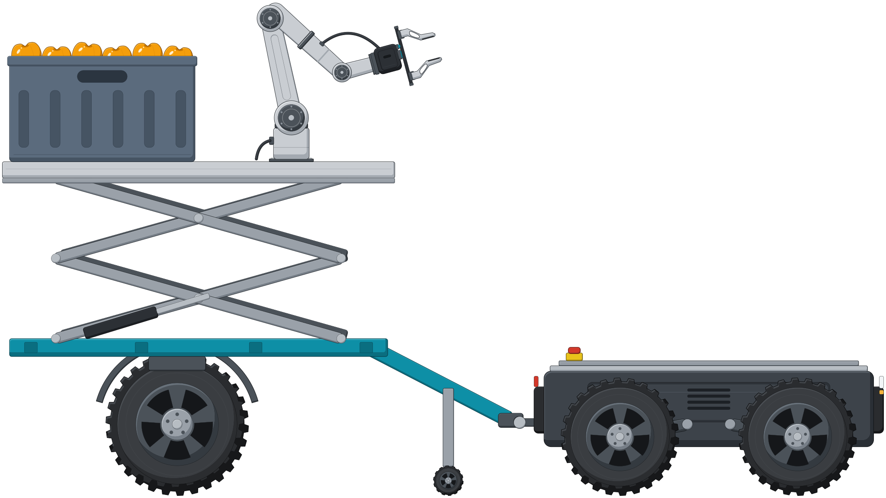

Iván García-Fernández
Doctorando en Ingeniería de Sistemas Avanzados · Universidad Andrés Bello · Santiago, Chile
Soy Ingeniero en Automatización y Robótica (UNAB, 2024, Magna Cum Laude) e investigo en el grupo de robótica del Dr. Juan Pablo Vásconez. Mi tesis trata la percepción activa con brazos robóticos para la cosecha de frutos ocluidos: un brazo con cámara elige la vista que revela un fruto tapado por hojas y ramas considerando lo que verá el detector, si el brazo puede llegar a esa vista y cuándo conviene pedir ayuda al operador humano.
- 318estudios en mi revisión sistemática de percepción activa (PRISMA 2020)
- 4artículos en congresos (Springer CCIS e IEEE), uno aceptado para noviembre de 2026
- 2manuscritos para Biosystems Engineering: uno en revisión y uno por enviar
- 4proyectos de I+D como colaborador (Fondecyt, Núcleo Milenio, Endowment UNAB y Prueba de Concepto UNAB)
Intereses de investigación
- Percepción activa
- Siguiente mejor vista (NBV)
- Manipulación robótica
- Robótica agrícola
- Humano en el lazo
- Interacción humano-robot
- Segmentación de instancias bajo oclusión
- Aprendizaje por demostración
- ROS 2 y Gazebo

Noticias
- Presentaré en ARTIIS 2026 el estudio de segmentación de frutos bajo oclusión (YOLO11, YOLO26 y Mask2Former), aceptado para Springer CCIS.
- Entregué el proyecto de tesis; el examen de candidatura está propuesto para el 26 de noviembre de 2026.
- Enviamos a Biosystems Engineering el manuscrito sobre cuánto escala un robot de transporte en la cosecha humano-robot de palta.
- Activamos la Rama Estudiantil IEEE de la UNAB y su capítulo de la Robotics and Automation Society; presido la rama.
- Participé en la 3rd Summer School for Systems & Software Engineering in Robotics de TU Delft (Países Bajos, 40 horas).
- Presenté en RICAI 2025 (IEEE), en Hangzhou, China, la evaluación de interacción humano-robot en un sistema de dos robots teleoperados.
Toda la historia, año por año, está en Trayectoria.